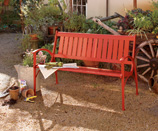
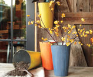
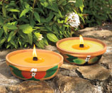

Our extraordinary oven allows for year-round outdoor cooking. Your pizza will never be better, or your roasted meats, vegetables and breads! Its unique domed shape is designed to build fast, even, high-convection heat internally and dissipate slowly. And the double-walled concrete composite construction ensures that you and your guests won’t burn themselves touching the outside. It features a 24" diam. firebrick cooking floor; 6" oven landing (to keep food warm and to hold pots or pans); smoke-diverting vent and chimney; metal door; and a wood-storing metal stand. The dome is weather-protected with a beautiful, Old-World Tuscan “giallo” glaze. Handmade in California.
Home and Garden



